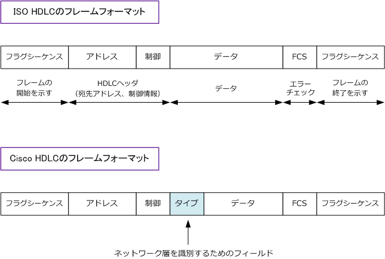
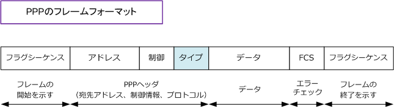
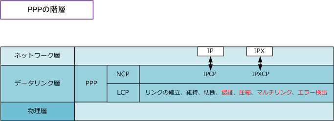
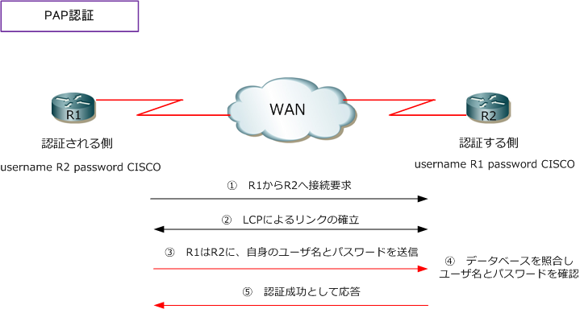
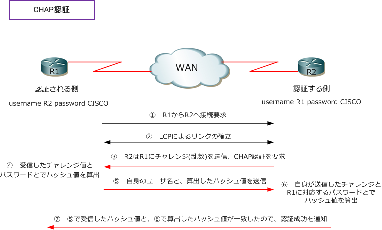
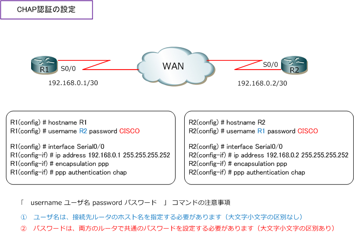

WAN - HDLC / PPP
WANカプセル化プロトコル - HDLC
WANカプセル化プロトコルは HDLC、PPP であるという解説がよくありますが、これは専用線、ISDN、 PSTNなどの回線に当てはまる話です。広域イーサネットの場合Ethernetです。先ずHDLCを解説します。
HDLC（ High-level Data Link Control ）は、シリアルインターフェースで専用線などのポイントツー ポイント接続で使用するデータリンク層プロトコル。HDLCは、ISO（ 国際標準化機構 ）で標準化されて いますが、ネットワーク層を識別するフィールドがないため複数のプロトコルを扱えないことからメーカ の多くが独自方式をHDLCに実装し、ネットワーク層で複数のプロトコルを使用できるようにしています。

Ciscoルータでは、ISOのHDLCはサポートしておらず、Cisco独自方式のHDLCのみをサポートしています。 そのため、Ciscoルータと他メーカーのルータとでシリアル回線上で、ポイントツーポイント接続する場合、 WANプロトコルにHDLCは使用できないので例えば PPP をWANプロトコルとして使用する必要があります。 現在のシリアルインターフェースのカプセル化を確認するためには show interfaces s0/0 で確認できます。 なお、Ciscoルータのシリアルインターフェースでカプセル化タイプをHDLCに設定するコマンドは以下です。
Router(config)# interface s0/0 Router(config-if)# encapsulation hdlc
WANカプセル化プロトコル - PPP
PPP（ Point-to-Point Protocol ）は、専用線、PSTN、ISDNなどのポイントツーポイント接続で最も よく使用されるデータリンク層のプロトコル。PPPはHDLCをベースに開発されていますが、PPPの場合 プロトコルフィールドが設けられているのでIP、IPXなど複数のプロトコルを使用した環境をサポート します。また、PPPはオプションとして認証、圧縮、マルチリンク、エラー制御をサポートしています。

PPPはLCP (Link Control Protocol) と NCP（Network Control Protocol）の2つから構成されています。 LCP（リンク制御プロトコル）はリンク確立、維持、切断処理をします。その他4つオプションがあります。
NCP（ネットワーク制御プロトコル）は、ネットワーク層プロトコルを識別するためのタイプフィールドを 持っており、ネットワーク層がIPならIPCP、IPXならIPXCPをNCPとして使用し通信の開始、終了をします。 PPPの接続は、?@LCPにおけるリンクの確立 ?A認証（認証がある場合）?BNCPにおける接続の確立の順です。

| LCP オプション |
使用するプロトコル | 説明 |
|---|---|---|
| 認証 | PAP、CHAP | PPPで接続要求を行ってきたデバイスのユーザ名とパスワードを確認して事前に登録 した正しい情報であれば認証を成功しPPPリンクを確立させる。ユーザ名とパスワード 情報はPAPではクリアテキスト(暗号化されない)、CHAPでは暗号化して送信される。 |
| 圧縮 | Predictor、Stac、MPPC | データ圧縮でデータ量を少なくすることができるので低速なWANリンクでも効率的 に通信することができるが、圧縮による問題点も多くある。一般的には使用しない。 |
| マルチリンク | multi-link protocol | デバイス間での複数の並行するPPPリンクを1つの論理的なリンクとして使用できる。 |
| エラー検出 | Quality、MagicNumber | QualityとMagicNumberで、PPPリンクのエラーを検出しデータリンク品質を高める。 |
最後に、PPPのリンク確立フェーズ後に実行できる認証プロトコルであるPAP/CHAPを詳しく見てみます。
PAPでは、認証される側のクライアントからユーザ名とパスワードを、認証する側のアクセスサーバに送り その情報をもとにアクセスサーバ側に登録されたデータベース（ユーザ名とパスワードの情報）と照合して 認証を行う2ウェイハンドシェイクの方式を採用しています。認証の流れをルータ間の接続で見てみましょう。

CHAPでは、下図のようにチャレンジ(乱数文字列)とパスワードとでハッシュ値を求めて送信することから PAPのようにクリアテキストのままパスワードを送信したりしません。CHAPは3ウェイハンドシェイクです。

以下は、CiscoルータでPPPリンク確立時のCHAPによる相互認証のためのコンフィグレーション設定です。 CHAP認証を設定の上で必須の設定事項は、?@ホスト名 ?Aカプセル化タイプ（ppp）?B認証タイプ（chap） ?C 認証情報のユーザ名(接続先ルータのホスト名)、パスワード（両方のルータとで同じパスワード）です。

ステータスはshow interfaces serial0/0で確認できて、動作検証はdebug ppp authenticationで確認可能。